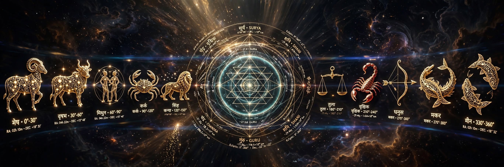

ANCIENT WISDOM • MODERN INTELLIGENCE
अंधविश्वास नहीं, गणितीय गणना और कर्म सिद्धांत। जब जीवन में अनिर्णय, व्यापारिक अवरोध या पारिवारिक संकट आए—तब भारतीय परंपराओं का सही संदर्भ और अध्ययन आपका मार्ग प्रशस्त करता है।
"मेरा मानना है कि इंसान की हर परेशानी को केवल बाहर से देखकर नहीं समझा जा सकता। कई बार समस्या परिस्थितियों में होती है, कई बार रिश्तों में, कभी अपने निर्णयों में और कभी उन बातों में जिन्हें हम किसी से कह भी नहीं पाते। मार्गदर्शन का पहला कदम सुनना है, दूसरा परिस्थिति को समझना और तीसरा उपलब्ध विकल्पों पर विचार करना।"
जब जीवन के सभी रास्ते बंद दिखाई दें, तब एक नए संकल्प की आवश्यकता होती है। जीवन में कभी-कभी ऐसा समय आता है, जब परिस्थितियाँ एक के बाद एक विपरीत होती चली जाती हैं। जिन रिश्तों पर भरोसा था, वे साथ छोड़ने लगते हैं। किए गए प्रयास निष्फल दिखाई देते हैं और आगे बढ़ने का कोई स्पष्ट मार्ग समझ नहीं आता।
ऐसे समय में मनुष्य केवल परिस्थितियों से ही नहीं, अपने अतीत, अपने निर्णयों और अपने कर्मों से भी सामना करता है। यही वह मोड़ है, जहाँ आत्ममंथन, अपनी भूलों का स्वीकार, पश्चाताप और एक दृढ़ संकल्प नया अर्थ प्राप्त करते हैं। यहीं से आरंभ होता है ब्रह्मास्त्र विधान का भाव।
ब्रह्मास्त्र विधान एक विशिष्ट अनुष्ठान है, जिसमें निर्धारित आध्यात्मिक एवं अनुष्ठानिक प्रक्रियाओं के साथ पश्चाताप, प्रायश्चित और संकल्प के भाव को महत्व दिया जाता है। इसका मूल विचार केवल बाहरी परिस्थितियों में समाधान खोजना नहीं, बल्कि अपने भीतर भी उस परिवर्तन की संभावना को स्वीकार करना है, जिसकी आवश्यकता जीवन को नई दिशा देने के लिए हो सकती है।
सनातन की कुछ तांत्रिक परंपराओं में माँ प्रत्यंगिरा को उग्र, शक्तिशाली और रक्षात्मक स्वरूप में आराध्य माना जाता है। उनकी उपासना का भाव भय पर नहीं, बल्कि श्रद्धा, अनुशासन और दिव्य संरक्षण की कामना पर आधारित होना चाहिए।
श्रद्धा में शक्ति। संकल्प में स्थिरता। आराधना में संरक्षण की कामना।
"समय का पहिया सदा एक सा नहीं रहता। जब कुंडली में छठा भाव या एकादश भाव पीड़ित होता है, तो मनुष्य अपनी श्रेष्ठ मेहनत के बाद भी कर्जे में दब जाता है।"
“अनुष्ठान संपन्न कराना एक प्रक्रिया है, लेकिन उसके शास्त्रीय आधार, उद्देश्य और विधान को समझना ही वास्तविक विशेषज्ञता है।”
पूजा करवाना एक बात है, पूजा को समझना दूसरी। KAALGYA इसी दूसरी योग्यता को महत्व देता है।
जहाँ कर्मकांड समाप्त होता है, वहीं से उसके शास्त्रीय औचित्य को समझने की आवश्यकता शुरू होती है।
क्या आपने अब तक केवल पूजा करवाई है, या कभी यह भी जाना है कि वह पूजा आपके लिए क्यों निर्धारित की गई थी?
हमारा उद्देश्य कर्मकांड की संख्या बढ़ाना नहीं, अनुष्ठान के चयन से लेकर उसके विधान तक हर पहलू को समझना है।
आपकी श्रद्धा केवल आश्वासनों की नहीं, शास्त्रीय समझ और उत्तरदायी मार्गदर्शन की अधिकारी है।

राशिफल केवल भविष्य जानने का माध्यम नहीं, समय को समझने की एक वैदिक दृष्टि है।
ग्रहों की गति संकेत देती है, शास्त्र उनका अर्थ समझाते हैं और सही विवेक जीवन की दिशा निर्धारित करता है। भारतीय ज्योतिष परंपरा में राशिफल केवल सामान्य भविष्यवाणी नहीं, बल्कि ग्रहों की स्थिति, राशि स्वभाव, गोचर एवं ज्योतिषीय सिद्धांतों के अध्ययन से निर्मित एक महत्वपूर्ण मार्गदर्शन है।
KAALGYA में हमारा प्रयास राशिफल को केवल शब्दों का संग्रह बनाना नहीं, बल्कि शास्त्रीय आधार, सूक्ष्म ज्योतिषीय अध्ययन और उत्तरदायी विवेचन के साथ प्रस्तुत करना है।
हमारा विश्वास है कि ज्योतिष का उद्देश्य मन में भय उत्पन्न करना नहीं, बल्कि समय की प्रकृति को समझने, अवसरों के प्रति सजग रहने और चुनौतियों का सामना विवेकपूर्वक करने की दृष्टि प्रदान करना है।
भारतीय ज्योतिष परंपरा में मुहूर्त का संबंध किसी कार्य के आरंभ के लिए समय-निर्धारण से है। विवाह, गृह-प्रवेश, भूमि पूजन, यात्रा, संस्कार, यज्ञ तथा कृषि जैसे कार्यों के लिए अलग-अलग नियमों का वर्णन मिलता है। मुहूर्त का निर्णय केवल तिथि देखकर नहीं किया जाता। इसमें तिथि, वार, नक्षत्र, योग, करण, लग्न, ग्रहों की स्थिति और कार्य-विशेष के नियमों का विचार किया जाता है। प्रत्येक कार्य की प्रकृति के अनुसार इन नियमों का महत्व बदलता है। दैवज्ञ राम रचित मुहूर्तचिन्तामणि में संस्कार, विवाह, यात्रा, वास्तु तथा गृह-प्रवेश के अलग-अलग प्रकरण हैं। अन्य धर्मशास्त्रीय, गृह्यसूत्रीय और वास्तु-ग्रंथों में भी विभिन्न संस्कारों एवं कर्मों का विधान मिलता है।
क्या आपके जीवन, परिवार या भाग्य में कुछ ऐसे पैटर्न हैं जो बार-बार दोहराते हैं?
Powerful vastu tips और energy correction secrets जो घर में positivity activate करते हैं।
विवाह संगतता, कुंडली मिलान, नाड़ी दोष और वैवाहिक जीवन के ज्योतिषीय रहस्य।
पितृपक्ष विशेष मार्गदर्शन, पितृ दोष निवारण, श्राद्ध विधि और तर्पण विधि।
प्राचीन ऋषियों के गुप्त ज्ञान को आधुनिक विज्ञान की दृष्टि से समझना।
"यह कालज्ञ के विशेष दिशा यंत्र, कार्तवीर्जुन यंत्र एवं नृसिंह यंत्र के चैतन्य ऊर्जा-मंडल से अभिमंत्रित स्थान है।"
"Paaji tussi sach vich rab de bande ho! Sade transport business vich 2 saal ton masla chal reha si... 40 dina de andar sari payment clear ho gayi."
"He pinpointed the exact year of my career downfall. Followed the remedial regimen and secured my promotion to VP within 3 months."
"3 साल से रिश्ता नहीं मिल रहा था। Guruji ने जो गुरु-शुक्र ग्रह शोधन बताया उसके 2 महीने में शादी पक्की हो गई।"
"कार्तवीर्जुन यंत्र स्थापना के बाद से हमारे टेक्सटाइल शोरूम में ग्राहकों की आवाजाही दोगुनी हो गई है। आभार गुरुजी!"
"अज्ञात भय और भयंकर अनिद्रा से परेशान था। सुकून कक्ष के उपायों और रुद्राक्ष धारण से चमत्कारिक शांति मिली।"
"चिकित्सकीय निराशा के बाद हमने कालज्ञ जी से गर्भधारण मुहूर्त और पुंसवन विधान लिया। आज हमारे घर स्वस्थ पुत्र रत्न है।"
"प्रॉपर्टी विवाद पिछले 6 साल से कोर्ट में अटका था। सही होरा और नक्षत्र चयन कर कदम उठाने से फैसला हमारे पक्ष में आया।"
"कैनेडा स्टडी वीज़ा बार-बार रिजेक्ट हो रहा था। गुरुजी के मार्गदर्शन और राहु शांति विधान के बाद पहली बार में अप्रूवल मिला।"
"ऐसी सटीक गणितीय गणना मैंने जीवन में पहली बार देखी है। इन्होनें बिना बताए मेरी हर बात बिल्कुल सटीक पकड़ ली।"
करियर या विवाह से जुड़ी किसी एक समस्या पर स्पष्टता।
12 भावों का 45 मिनट गहन गणितीय व आध्यात्मिक शोधन।
कालसर्प, पितृ दोष, मांगलिक दोष एवं भारी शनि शांति।
बिना तोड़-फोड़ 16 दिशाओं व 32 पद-देवताओं का ऊर्जा कीलन।
अंधविश्वास, रटे-रटाए उपाय और सतही धारणाओं से मुक्त—KAALGYA का प्रमाणिक, तार्किक एवं अनुभूत दृष्टिकोण।
बाजारू ज्योतिष में ग्रहों को केवल दो साँचों में बाँट दिया जाता है—शुभ ग्रह या अशुभ ग्रह। किसी की कुंडली में ग्रह यदि मारक (२रे या ७वें भाव का स्वामी) अथवा बाधक बन रहा हो, तो पंडित या तो जातक को डराकर महंगे अनुष्ठान में उलझा देते हैं, या फिर योगकारक ग्रह का विचार किए बिना अंधाधुंध रत्न पहना देते हैं। सत्य यह है कि कोई भी ग्रह स्वतंत्र रूप से शुभ या अशुभ नहीं होता; वह केवल ऊर्जा का संवाहक (Energy Conduit) है।
हमारा सिद्धांत स्पष्ट है: "ग्रह की शक्ति लग्न चक्र (D1) के उस भाव से नियंत्रित होती है, जहाँ वह भौतिक रूप से उपस्थित है।" उदाहरण के लिए, सूर्य यदि आपकी कुंडली में स्थित हैं, तो परिणाम इस बात पर निर्भर करेगा कि वह १२ भावों में से किस भाव, किस दिशा, और किस पंचमहाभूत (अग्नि, पृथ्वी, वायु, जल, आकाश) में बैठे हैं। उपचार ग्रह का नहीं, उस भाव के तत्व का किया जाता है। जब ग्रह के भाव-तत्व को सही माध्यम मिल जाता है, तो वही ग्रह कुंडली में मारक, बाधक अथवा नीच का होने पर भी अपनी अनिष्ट रश्मियों को त्यागकर जातक के अनुकूल कार्य करने के लिए विवश हो जाता है।
स्थिति: मेष लग्न के एक जातक की कुंडली में सूर्य पंचमेश होकर परम 'योगकारक' थे। परंतु वे जा बैठे द्वादश भाव (मीन राशि, व्यय व अस्पताल का भाव) में। अन्य ज्योतिषियों ने उन्हें योगकारक देखकर सवा सात रत्ती का 'माणिक्य' (Ruby) धारण करवा दिया।
घातक प्रभाव: माणिक्य पहनते ही सूर्य की प्रचंड अग्नि ने द्वादश भाव (अस्पताल, कोर्ट-कचहरी, अनिद्रा) को भड़का दिया। जातक को नेत्रों में गंभीर संक्रमण हुआ, पिता का स्वास्थ्य बिगड़ा और व्यापार में आकस्मिक टैक्स पेनल्टी से लाखों की हानि हुई।
KAALGYA शोधन: हमने तत्काल माणिक्य उतरवाया। सूर्य को अग्नि से नहीं, बल्कि द्वादश भाव के जल-तत्व और आकाश-तत्व के नियमों से संतुलित किया गया। सूर्य के विशिष्ट भाव-संकेतों के अनुसार दान और ताम्र-पात्र जल तर्पण का समय पुनर्निर्धारित किया। परिणामतः ४० दिनों के भीतर नेत्र रोग शांत हुआ और द्वादश भाव की वही ऊर्जा विदेश से नए व्यापारिक अनुबंध दिलाने में रूपांतरित हो गई।
तंत्र कोई खेल या चमत्कार नहीं है; यह ब्रह्मांडीय हाई-वोल्टेज ऊर्जा तरंगों का संचरण है। जैसे एक १०० वाट के बल्ब में ११,००० वोल्ट का करंट प्रवाहित करने पर वह फ्यूज हो जाता है, ठीक वैसे ही यदि जातक का नाड़ी-तंत्र (Nervous & Etheric System) उस प्रचंड ऊर्जा को धारण करने योग्य न हो, तो साधना लाभ के स्थान पर मस्तिष्क पक्षाघात, उन्माद, डिप्रेशन अथवा रक्त विकारों का कारण बन जाती है। जन्म चक्र के अष्टम (गूढ़ साधना) और द्वादश (आध्यात्मिक विलय) भाव का गणित यह निश्चित करता है कि व्यक्ति को तंत्र की ओर बढ़ना चाहिए अथवा उससे दूर रहकर केवल सात्विक वैदिक मार्ग अपनाना चाहिए।
आज ९५% मामलों में लोग सामान्य घरेलू क्लेश, वास्तु जनित भारीपन, डिप्रेशन या पितृ ऋण को 'काला जादू' या 'किसी का किया-कराया' मान लेते हैं। तांत्रिकों द्वारा भय दिखाकर लूटा जाना यहीं से आरंभ होता है। KAALGYA में हम कभी बिना प्रमाण बात नहीं करते। कुंडली में जब तक राहु-केतु का अष्टमेश से संबंध, षष्ठ भाव का मारक गोचर और लग्न पर तमस ग्रहों का विशिष्ट आघात न दिखे, तब तक उसे बाह्य तंत्र-बाधा नहीं कहा जा सकता।
स्थिति: एक प्रतिष्ठित परिवार हमारे पास आया। उनका कहना था कि किसी ईर्ष्यालु रिश्तेदार ने उन पर 'मारण या उच्चाटन प्रयोग' करवाया है, क्योंकि पिछले डेढ़ वर्ष से घर का मुखिया अचानक कांपने लगता था, काम ठप हो गया था और रात को भयानक डरावनी आवाजें सुनाई देती थीं। वे ३ तांत्रिकों को लाखों रुपये फूंक चुके थे।
KAALGYA ऑडिट: जब हमने कुंडली का सूक्ष्म परीक्षण किया, तो पाया कि उन पर कोई काला जादू था ही नहीं। कुंडली में चंद्रमा नीच होकर षष्ठ भाव में केतु के नक्षत्र में पीड़ित था, जो मानसिक हेलोसिनेशन और अज्ञात भय उत्पन्न करता है। दूसरा, उनके भवन के उत्तर-पूर्व (ईशान) कोण में भारी कबाड़ और सीवर लीकेज था, जिसने जल तत्व को विषाक्त कर दिया था।
समाधान: हमने कोई बकरा, सिंदूर या तांत्रिक अनुष्ठान नहीं किया। केवल ईशान कोण की भूमि का शोधन करवाया, चंद्र-ऊर्जा को चांदी और जल के अनुष्ठानिक नियमों से स्थापित किया। ठीक २१ दिनों में डरावने स्वप्न बंद हुए और ४५ दिनों में उनका कारोबार पूरी तरह पटरी पर लौट आया।
आम वास्तु विशेषज्ञ आँख मूँद कर कह देते हैं कि "गोमुखी प्लॉट (सामने से संकरा, पीछे से चौड़ा) अमृत है और शेरमुखी प्लॉट (सामने से चौड़ा, पीछे से संकरा) विनाशकारी है।" विचार कीजिए—यदि शेरमुखी भूखंड पूर्णतः त्याज्य होता, तो प्राचीन वास्तु ग्रंथों में 'सिंहमुख' प्रासाद और दुर्गों का विस्तृत विधान रचा ही क्यों जाता?
गोमुखी भूमि संकुचन, संरक्षण और आंतरिक शांति (Containment Energy) का प्रतीक है। यह संतों, लेखकों, अध्यापकों या सेवानिवृत्त जीवन के लिए उत्तम है, जहाँ धन से अधिक मन की शांति चाहिए। परंतु शेरमुखी भूमि आक्रामक विस्तार, प्रभुत्व और तीव्र गति (Dynamic Expansion & Dominance) उत्पन्न करती है।
राजनीतिज्ञों, उद्योगपतियों, रियल एस्टेट डेवलपर्स, लॉजिस्टिक्स कंपनियों और बड़े व्यापारियों को अपने क्षेत्र में निरंतर वर्चस्व और आक्रामकता की आवश्यकता होती है। यदि ऐसा व्यक्ति शांत गोमुखी भवन में बैठ जाएगा, तो उसकी विस्तारवादी ऊर्जा सुस्त पड़ जाएगी। जातक की कुंडली के दशम भाव में बैठे ग्रह (जैसे मंगल, सूर्य अथवा उच्च का शनि) यह मांग करते हैं कि उसका कार्यस्थल सिंह-ऊर्जा से स्पंदित हो।
स्थिति: लुधियाना और दिल्ली के एक बड़े ट्रांसपोर्ट एवं हेवी मशीनरी निर्यातक ने किसी पंडित के कहने पर करोड़ों का एक 'आदर्श गोमुखी' कॉर्पोरेट ऑफिस बनवाया। ऑफिस में शिफ्ट होने के १८ महीने के भीतर उनके स्थापित टेंडर्स निरस्त होने लगे, क्लाइंट्स टूटने लगे और कैश-फ्लो फ्रीज हो गया।
कुंडली व वास्तु मिलान: जातक की सिंह लग्न की कुंडली में दशमेश शुक्र और पराक्रमेश मंगल उच्च राशि में बैठे थे। इस व्यक्ति की प्रकृति शेर जैसी थी, जिसे चौड़े फ्रंट और आक्रामक ऊर्जा की आवश्यकता थी। गोमुखी प्लॉट ने उसकी ऊर्जा की गति को मंद (Choke) कर दिया था।
KAALGYA सुधार: हमने बिना किसी तोड़फोड़ के मुख्य प्रवेश और आंतरिक ऊर्जा ग्रिड को शेरमुखी प्रारूप (Wide Inflow Matrix) में रूपांतरित किया और उनके दशम भाव की ऊर्जा को भवन के ३२ पद-देवताओं से जोड़ा। अगले ५ महीनों के भीतर रुका हुआ ३.५ करोड़ का भुगतान क्लियर हुआ और कंपनी ने दो नए अंतरराष्ट्रीय रूट हासिल किए।
थर्मोडायनामिक्स का बुनियादी नियम कहता है: "ऊर्जा को न तो नष्ट किया जा सकता है और न ही समाप्त, उसे केवल एक रूप से दूसरे रूप में रूपांतरित किया जा सकता है।" मंगल विशुद्ध रूप से ब्रह्मांडीय गतिज ऊर्जा (Kinetic Fire & Blood Drive) है। जब किसी जातक के १, ४, ७, ८ या १२वें भाव में मंगल बैठता है, तो इसका अर्थ है कि उसके शरीर और चेतना में सामान्य मनुष्य की तुलना में दोगुनी अग्नि प्रवाहित हो रही है।
अज्ञानी ज्योतिषी इसे 'दोष' कहकर जातक को पीपल विवाह, कुंभ विवाह या भात पूजा में उलझा देते हैं। किसी अनुष्ठान से यह ऊर्जा गायब नहीं हो सकती। यदि आप बहती हुई उग्र नदी के आगे बिना निकास की दीवार खड़ी करेंगे, तो वह तटबंध तोड़कर बाढ़ ही लाएगी।
जब किसी मांगलिक जातक की इस तीव्र अग्नि को कर्म, खेल, उद्यम या उचित मैथुन के माध्यम से रचनात्मक दिशा नहीं मिलती, तो यह ऊर्जा अंदर की ओर मुड़ जाती है (Inverted Fire)। इसके परिणाम स्वरूप जातक को क्रोनिक पेप्टिक अल्सर, हाइपर-एसिडिटी, लिवर इन्फ्लेमेशन, उच्च रक्तचाप, त्वचा का जलना, बार-बार चोट लगना, एक्सीडेंट्स और अनियंत्रित क्रोधावेश का सामना करना पड़ता है। मंगल से संबंधित वस्तुएं विनाश का कारण बनने लगती हैं।
मांगलिक का विवाह गैर-मांगलिक से कराने पर गैर-मांगलिक पार्टनर उस तीव्र अग्नि के रेडिएशन को झेल नहीं पाता और अस्वस्थ होने लगता है। परंतु केवल 'मांगलिक-मांगलिक' होना भी पर्याप्त नहीं है। हमें दोनों की कुंडलियों में मंगल की श्रेणी (Degree of Fire & Planetary Retrogression) देखनी होती है। यदि एक का मंगल सौम्य अग्नि का है और दूसरे का मंगल अंगारक (राहु युक्त) है, तो विवाह फिर भी संकट में आ जाएगा।
स्थिति: २९ वर्षीय एक सॉफ्टवेयर इंजीनियर युवक गंभीर क्रोनिक अल्सर, अनिद्रा और भयंकर गुस्से से पीड़ित था। पंडितों ने कहा कि लग्न में वक्री मंगल का 'घोर मांगलिक दोष' है, जिसके कारण ३ जगह रिश्ते तय होकर टूट गए थे और जीवनसाथी की मृत्यु का भय दिखाया गया था।
KAALGYA डायग्नोसिस: जातक दिन भर कुर्सी पर बैठकर कोडिंग करता था। मंगल की प्रचंड गतिज ऊर्जा पूर्णतः अवरुद्ध थी, जो पेट की जठराग्नि को जलाकर अल्सर बना रही थी।
चैनलisation विधान: हमने कोई दोष निवारण पूजा नहीं करवाई। हमने उसके दैनिक रूटीन में भारी वेट-ट्रेनिंग, कॉम्बैट स्पोर्ट्स और भूमि-आधारित प्राणायाम अनिवार्य किया। मंगल की ऊर्जा पसीने और मांसपेशियों के निर्माण में व्यय होने लगी। २ महीने में अल्सर ६०% घट गया। इसके बाद हमने उसकी कुंडली की सटीक अग्नि-डिग्री (Fire Intensity Category) से मेल खाती हुई एक मांगलिक कन्या का चयन करवाया। आज ४ वर्ष बाद दोनों अत्यंत सुखी दांपत्य जीवन जी रहे हैं।
"हर पूजा अनुष्ठान हो सकती है, लेकिन हर अनुष्ठान शास्त्रीय समझ के साथ हो, यह आवश्यक है।"
KAALGYA में हम कर्मकांड नहीं गिनते, उसके पीछे का शास्त्र समझते हैं।
KAALGYA — जहाँ श्रद्धा को शास्त्रीय समझ का मार्गदर्शन मिलता है।
"ज्ञान का उद्देश्य केवल भविष्य नहीं—जीवन के हर अवरोध को गणितीय सटीकता से भेदना है।"
हर रहस्य चमत्कार नहीं होता। कुछ रहस्य गहन अध्ययन की प्रतीक्षा करते हैं।
मैं आरंभ नाथ हूँ। पिछले 15 से अधिक वर्षों और 5,000 से अधिक जन्मकुंडलियों के विश्लेषण के अनुभव ने मुझे सिखाया है कि किसी विषय की गहराई उसके दावों से नहीं, उसे समझने की दृष्टि से सामने आती है।
मेरे लिए ज्योतिष केवल यह जानने का प्रयास नहीं कि आगे क्या होगा। यह उन संभावनाओं, परिस्थितियों और जीवन के प्रश्नों को समझने की एक परंपरा है, जिनके उत्तर खोजते हुए मनुष्य सदियों से आकाश की ओर देखता आया है।
कालज्ञ में मेरा प्रयास है कि ज्योतिष, वास्तु, गुण-मिलान और वैदिक परंपराओं को उनके शास्त्रीय संदर्भ, गहराई और व्यावहारिक महत्व के साथ प्रस्तुत किया जाए—बिना अनावश्यक भय, खोखले दावों या चमत्कारों के प्रदर्शन के।
"काल से परे। सत्य की ओर।"
एक प्राचीन दृष्टि। एक आधुनिक युग। ज्ञान को समझने का एक नया मार्ग।
हम एक ऐसे भविष्य की कल्पना करते हैं जहाँ सनातन ज्ञान केवल पुस्तकों तक सीमित न रहे, ज्योतिष केवल भविष्यवाणियों तक न सिमटे और तकनीक केवल सुविधा का साधन न होकर गहन अध्ययन का माध्यम बने।
जहाँ पंचांग की गणना अधिक सुलभ हो, शास्त्रीय परंपराओं का अध्ययन अधिक व्यवस्थित हो और जीवन के कठिन प्रश्नों पर मार्गदर्शन भय के बजाय विवेक के साथ मिले।
कालज्ञ का संकल्प इसी दिशा में आगे बढ़ना है—प्राचीन ज्ञान की विरासत को संरक्षित करना, उसे आधुनिक डिजिटल साधनों से जोड़ना और आने वाली पीढ़ियों तक उसकी गहराई पहुँचाना।
प्रत्येक संस्कार का विस्तृत शास्त्रीय महत्व, देवता, विधान एवं 12 महीनों के शुद्ध मुहूर्त देखें
आज के पंचांग के अनुसार शुभ, अशुभ काल तथा प्रत्येक होरा में क्या करें और क्या न करें